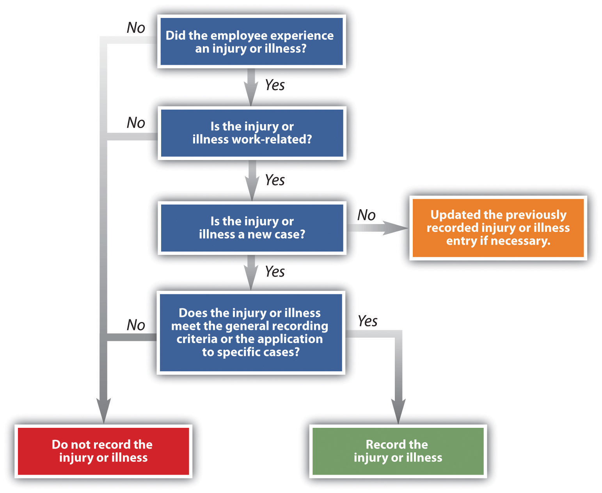
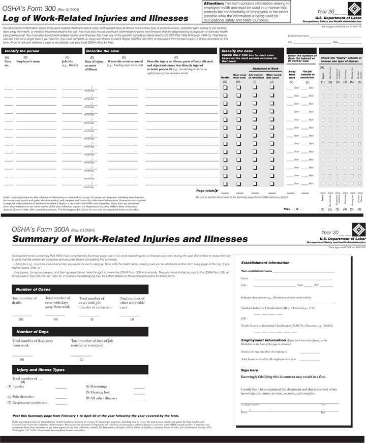

Workplace safety is the responsibility of everyone in the organization. HR professionals and managers, however, play a large role in developing standards, making sure safety and health laws are followed, and tracking workplace accidents. Section 13.1.1 "Occupational Safety and Health Administration (OSHA) Laws" addresses workplace laws as they relate to safety.
In 2009 (the most recent data available at the time of this writing), 4,340 fatalities and 3.3 million injuries were reported.“Workplace Injuries and Illnesses: 2009,” Bureau of Labor Statistics, US Department of Labor, news release, October 21, 2010, accessed April 14, 2011, http://www.bls.gov/news.release/archives/osh_10212010.pdf. This staggering number represents not only the cost to employees’ well-being but also financial and time costs to the company. This is why health and safety is a key component of any human resource management (HRM) strategic plan.
The Occupational Safety and Health Act (OSHA)Passed in 1970, this act created the Occupational Safety and Health Administration, which oversees health and safety in the workplace., passed in 1970, created the Occupational Safety and Health Administration, which oversees health and safety in the workplace. The organization’s mission is to ensure safe and healthful working conditions for working men and women by setting and enforcing standards and by providing training, outreach, education, and assistance. For example, OSHA offers ten- and thirty-hour courses on workplace hazards and also provides assistance to ensure companies are in compliance with standards. OSHA is part of the US Department of Labor, with the main administrator being the assistant secretary of labor for occupational safety and health. This person reports to the labor secretary, who is a member of the president’s cabinet.
Although OSHA applies to all companies, health and safety standards are specifically mentioned for the following types of businesses:
Although OSHA standards may appear to apply only to companies in production, manufacturing, or construction, even companies with primarily an office function are required to abide by the laws set by OSHA. Examples (not at all an exhaustive list) of the types of safety laws (for all types of businesses) that are overseen by OSHA are as follows:
HR professionals and managers should have a good understanding of these laws and make sure, no matter which industry, that all these standards are followed in the workplace. These standards are normally part of the overall strategic HRM plan of any organization and are even more crucial to organizations involved in manufacturing.
There exist many examples of OSHA violations. For example, in a Queensbury, Pennsylvania, Dick’s Sporting Goods store, OSHA found six violations, including blocked access to a fire extinguisher and workers’ entering a trash compactor with the power supply on. Dick’s was fined $57,300 by OSHA and told it had fifteen days to comply or contest the findings.Chris Churchill, “OSHA Finds Violations at Queensbury Retailer,” Union Times, August 8, 2011, accessed August 21, 2011, http://www.timesunion.com/business/article/OSHA-finds-violations-at-Queensbury-retailer-1779404.php.
The Emergency Planning and Community Right to Know Act (EPCRA)Also called right-to-know laws, established by Congress in 1986. The law requires hazardous chemical reporting to state and local agencies, as well as information on the chemicals used in a particular facility. or more simply, right-to-know laws, were established by Congress in 1986. The purpose of this act was to require local and state governments to provide emergency response plans to respond to a chemical emergency.“Emergency Planning and Community Right-to-Know Act (EPCRA),” United States Environmental Protection Agency, accessed April 15, 2011, http://www.epa.gov/epahome/r2k.htm. The other requirement is that these plans must be reviewed on an annual basis. Companies that handle extremely hazardous substances (EHSs)A list of toxic chemicals outlined in the EPCRA and specific rules for handling them. in large quantities must develop response plans as well. In addition, any organization that manufactures, processes, or stores certain hazardous chemicals must make available to local fire departments and state and local officials material data safety sheetsInformation made available that describes to the local fire departments and state and local officials the types of chemicals manufactured, used, or stored. Also includes information on how to properly handle the materials and how to administer first aid in case of an accident.. The material data safety sheet should also be provided to employees, as the data lists not only the chemical components but health risks of the substance, how to handle the material safely, and how to administer first aid in the case of an accident. This requirement also states that inventories of all on-site chemicals must be reported to local and state governments, but the data sheets must also be made public, too.
This law and how it will be reported should be facilitated by the HR professional. Although the HRM may not know the chemical makeup of the materials used, he or she is responsible for facilitating the process to ensure that reporting is done timely and accurately. For organizations that use EHSs often, it is worthwhile to include the reporting process within the orientation training and provide ongoing training as the law changes. The A-Treat Bottling facility in Allentown, Pennsylvania, was cited by OSHA for repeat violations of lacking material safety data sheets for the chemicals it uses in manufacturing, among other infractions such as blocked exits and forklift violations. The fines totaled $110,880, and the company had fifteen days to comply or contest the allegations.“OSHA Cites Allentown Soft Drink Company,” NewsWire.com, August 4, 2011, accessed August 21, 2011, http://www.mmdnewswire.com/us-labor-departmen-57793.html.
It is also important to note that some state standards are different from federal standards, which means the HR professional will need to be aware of the laws in the individual state in which the company is operating.
How do you think the OSHA requirements apply to office work settings?
The record-keeping aspect of OSHA is perhaps as important as following the laws. Companies having fewer than ten employees in some industries are not required to keep records. The purpose of the record keeping does not imply that the employee or the company is at fault for a illness or injury. In addition, just because a record is kept doesn’t mean the employee will be eligible for workersworker’s compensation#8217; compensation. The record-keeping aspect normally refers to the keeping of incidence rates, or the number of illnesses or injuries per one hundred full-time employees per year, as calculated by the following formula:
Two hundred thousand is the standard figure used, as it represents one hundred full-time employees who work forty hours per week for fifty weeks per year. An HR professional can then use this data and compare it to other companies in the same industry to see how its business is meeting safety standards compared with other businesses. This calculation provides comparable information, no matter the size of the company. If the incidence rate is higher than the average, the HR professional might consider developing training surrounding safety in the workplace.
Knowing what should be reported and what shouldn’t be reported is an important component to OSHA. Figure 13.1 "The OSHA Decision Tree for Determining If an Injury or Illness Should Be Recorded" provides a decision tree that explains this. Data are reported using a form called OSHA 300, which is shown in Figure 13.2 "OSHA Reporting Form 300".
Figure 13.1 The OSHA Decision Tree for Determining If an Injury or Illness Should Be Recorded
Source: http://www.osha.gov/recordkeeping/ppt1/RK1flowchart.html (accessed September 2, 2011).
Figure 13.2 OSHA Reporting Form 300
Source: http://www.osha.gov/recordkeeping/new-osha300form1-1-04.pdf (accessed September 2, 2011).
As mentioned earlier, OSHA is responsible for enforcing standards. Besides requiring reporting, OSHA also performs inspections. OSHA is responsible for 7 million worksites across the country and so, of course, has to prioritize which ones it visits. OSHA has five main priorities for inspecting sites. First, it will inspect imminent danger situations. These are serious dangers that could cause death or serious harm. The second priority is for those sites where three or more employees were harmed, suffered illness, or were killed. These events are classified as fatalities or catastrophes and must be reported within an eight-hour time frame. The next priority is responding to complaints, which employees are allowed to file anonymously. Organizations that have had previous violations are prioritized next, and finally, planned programs. A planned program might be an organization that has had safety problems in the past and is working with OSHA to remedy the problem.
Most site visits are unannounced and begin with the inspector introducing himself or herself. Prior to this, the inspector has performed research on the organization to be inspected. Once this occurs, a representative of the organization is assigned to accompany the inspector and the inspector discusses the reasons for the site visit. The HR professional is normally responsible for this task.
The inspector then walks around, pointing out any obvious violations, and then the inspector and representative discuss the findings. Within six months a complete report is sent, along with any citations or fines based on what the inspector found. If the organization is in disagreement with the violation or citation, a follow-up meeting with the OSHA director is scheduled and some fines may be reduced if the organization can show how it has improved and met the standards since the original visit.
OSHA has several penalties (per violation) it can assess on organizations, ranging from $7,000 to $70,000. The higher penalties often are a result of very serious offenses, in which an employee could have been killed, but also are imposed for willful offenses that the employer was aware could cause serious injury or death and did nothing about them. This is considered blatant indifference to the law. For example, Northeastern Wisconsin Wood Products was issued $378,620 in fines for willful violations in the summer of 2011. The violations stemmed from repeat visits and citations to the facility, where no safety changes had been made. Some of the willful violations included lack of guards on dangerous machine belts and band saw blades and open-sided floors without a guardrail to prevent falls. Michael Connors, OSHA’s regional administrator in Chicago, said, “Northeastern Wisconsin Wood Products has a history of failing to comply with OSHA standards. The company has yet to abate many violations cited in previous inspections and are unduly placing their workers at risk.”“$378,620 in Fines Issued for Willful Violations,” Occupational Health and Safety, July 31, 2011, accessed August 21, 2011, http://ohsonline.com/articles/2011/07/31/378620-in-fines-issued-to-wisconsin-wood-firm-for-willful-violations.aspx? admgarea=news. While any violation of OSHA is serious, a willful violation is more serious, and the fines associated with it represent this.
PepsiCo is the world’s largest manufacturer, seller, and distributor of Pepsi-Cola products and generates $119 billion in sales every year.“PepsiCo Annual Report,” accessed September 15, 2011, http://www.pepsico.com/Download/PepsiCo_Annual_Report_2010_Full_Annual_Report.pdf. Tropicana juice is owned by Pepsi-Co. In October of 2005, a spark triggered an explosion at a Tropicana juice processing plant in Bradenton, Florida, causing burns to two-thirds of a worker’s body. While the worker survived, he underwent multiple surgeries to treat his burns. In this case, OSHA concluded that the fire could have been prevented if Tropicana had followed basic safety requirements such as risk evaluation, given tools to workers that did not produce sparks, and monitored for a buildup of flammable vapors and ventilated the area. OSHA inspectors tallied up a dozen violations, including two serious ones. Vice president of operations Mike Haycock said the plant has an incidence rate that is far lower than others in the industry, and plants around the country have immediately addressed many of the problems and are constantly working to correct other problems.Just-drinks editorial team, “US: Tropicana in Safety Hazards Payout,” just-drinks, April 18, 2006, accessed August 21, 2011, http://www.just-drinks.com/news/tropicana-in-safety-hazards-payout_id86183.aspx.
The irony is that although the Tropicana factory paid $164,250 in fines to OSHA, the company was part of the VPP or Voluntary Protection Program, whose membership benefits include exemption from regular inspections. Even after the fire, in 2007, OSHA formally reapproved the plant as a “star site,” the highest level in VPP, meaning the plant pledged to exceed OSHA standards.Chris Hamby, “Model Workforce Not Always Safe,” Massachusetts Coalition for Occupational Safety and Health, July 7, 2011, accessed August 21, 2011, http://www.masscosh.org/node/721. OSHA contends the VPP program isn’t perfect but is still a useful model to all employers of what can be achieved. For admission into the VPP program, workplaces must show they have fewer accidents and missed work days than average for their industry. According to Robert Tuttle, president of the local Teamsters union representing Tropicana workers, accidents are more common when employees are shifted out of their normal responsibilities, which is more common as the weak economy has led to staff cuts.David Gulliver, “Employees Not Always Safe in Model Workplaces,” Florida Center for Investigative Reporting, July 22, 2011, KitchenAid Mixer Review, accessed August 21, 2011, http://kitchenaidmixereview.com/2011/07/22/employees-not-always-safe-in-model-workplaces/. Tropicana plants have had more than eighty deaths since 2000, varying from preventable explosions to chemical releases to crane accidents.Chris Hamby, “Model Workplaces Not Always Safe,” Iwatchnews, July 7, 2011, accessed August 21, 2011, http://www.iwatchnews.org/2011/07/07/5130/model-workplaces-not-always-so-safe. PepsiCo and Tropicana have taken a hard stance on these types of accidents, as each of the plants now has a safety manager trained on OSHA standards to prevent accidents. In addition, strict operating procedures have been implemented to prevent future problems.